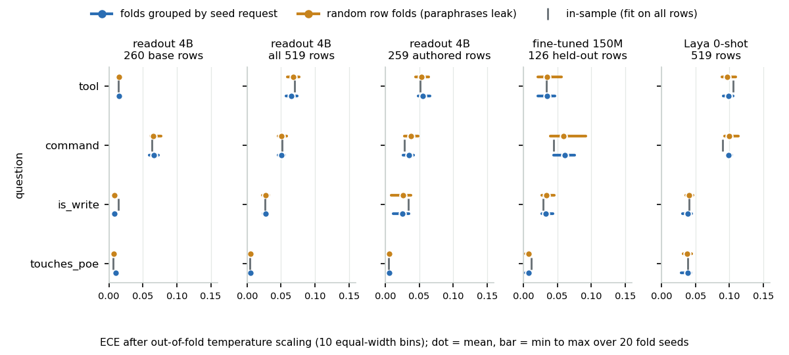
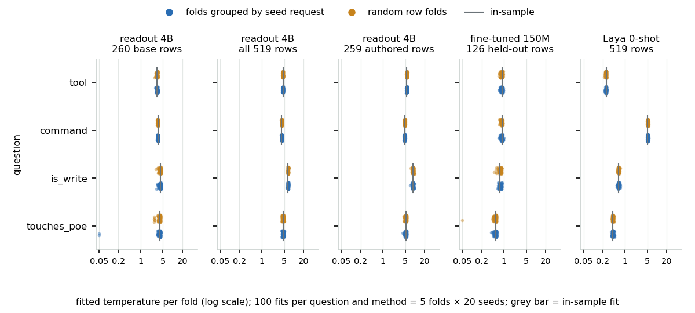

<title>Grouped Calibration Folds</title>
<link rel="stylesheet" href="https://fonts.googleapis.com/css2?family=IBM+Plex+Serif:wght@500;600&family=IBM+Plex+Sans:ital,wght@0,400;0,500;0,600;1,400&family=IBM+Plex+Mono:wght@400;500&display=swap">
<style>
  :root {
    --ground: #f3f5f4; --surface: #ffffff; --ink: #172026; --muted: #5e6b72; --rule: #d3dbd8;
    --accent: #2f6690; --accent-soft: #e3edf4;
    --ok: #2e7d5b; --ok-soft: #e2f1e8; --warn: #c7831c; --warn-soft: #f7ecd6; --bad: #b5432f; --bad-soft: #f6e2dd;
    --readout: #2f6690; --encoder: #c98a2b; --finetuned: #a8404b; --generative: #6b7378;
    --serif: "IBM Plex Serif", Georgia, "Times New Roman", serif;
    --sans: "IBM Plex Sans", system-ui, "Segoe UI", Roboto, sans-serif;
    --mono: "IBM Plex Mono", ui-monospace, Menlo, Consolas, monospace;
  }
  @media (prefers-color-scheme: dark) {
    :root:not([data-theme="light"]) {
      --ground: #0f1518; --surface: #161e22; --ink: #e6ecee; --muted: #98a6ac; --rule: #2a363b;
      --accent: #7fb0d6; --accent-soft: #1c2b36;
      --ok: #63c08f; --ok-soft: #173126; --warn: #e2a64c; --warn-soft: #3a2c15; --bad: #e07a68; --bad-soft: #3d201c;
      --readout: #7fb0d6; --encoder: #e2a64c; --finetuned: #e28a93; --generative: #9aa6ab;
    }
  }
  :root[data-theme="dark"] {
    --ground: #0f1518; --surface: #161e22; --ink: #e6ecee; --muted: #98a6ac; --rule: #2a363b;
    --accent: #7fb0d6; --accent-soft: #1c2b36;
    --ok: #63c08f; --ok-soft: #173126; --warn: #e2a64c; --warn-soft: #3a2c15; --bad: #e07a68; --bad-soft: #3d201c;
    --readout: #7fb0d6; --encoder: #e2a64c; --finetuned: #e28a93; --generative: #9aa6ab;
  }
  * { box-sizing: border-box; }
  body { margin: 0; background: var(--ground); color: var(--ink); font: 16px/1.6 var(--sans); }
  main { max-width: 780px; margin: 0 auto; padding: 2.5rem 1.25rem 5rem; }
  h1 { font: 600 2rem/1.15 var(--serif); margin: 0 0 .4rem; text-wrap: balance; letter-spacing: -.01em; }
  h2 { font: 600 1.35rem/1.25 var(--serif); margin: 2.6rem 0 .7rem; text-wrap: balance; }
  h3 { font: 600 1.02rem/1.3 var(--sans); margin: 1.6rem 0 .4rem; }
  p { margin: .7rem 0; max-width: 68ch; }
  .lede { color: var(--muted); font-size: 1.05rem; max-width: 62ch; }
  .eyebrow { font: 500 .72rem/1 var(--mono); letter-spacing: .12em; text-transform: uppercase; color: var(--accent); margin-bottom: .6rem; }
  a { color: var(--accent); }
  code, .mono { font-family: var(--mono); font-size: .88em; }
  figure { margin: 1.4rem 0; }
  figure svg { max-width: 100%; height: auto; display: block; }
  figcaption { font-size: .82rem; color: var(--muted); margin-top: .5rem; max-width: 68ch; }
  .card-demo { background: var(--surface); border: 1px solid var(--rule); border-radius: 8px; padding: 1rem 1.1rem; margin: 1.2rem 0; }
  .card-demo .req { font: 500 .95rem var(--sans); }
  .card-demo .cmd { font-family: var(--mono); font-size: .85rem; background: var(--ground); padding: .5rem .7rem; border-radius: 5px; margin: .6rem 0; white-space: pre-wrap; }
  .check { display: flex; gap: .6rem; align-items: flex-start; font-size: .9rem; padding: .55rem .7rem; border-radius: 6px; margin-top: .6rem; }
  .check.bad { background: var(--bad-soft); color: var(--ink); border-left: 3px solid var(--bad); }
  .check.ok { background: var(--ok-soft); border-left: 3px solid var(--ok); }
  .check.warn { background: var(--warn-soft); border-left: 3px solid var(--warn); }
  .check b { font-family: var(--mono); font-weight: 500; white-space: nowrap; }
  .actions { display: flex; gap: .5rem; margin-top: .7rem; }
  .btn { font: 500 .8rem var(--sans); padding: .35rem .7rem; border-radius: 5px; border: 1px solid var(--rule); background: var(--surface); color: var(--ink); }
  .btn.primary { background: var(--accent); color: #fff; border-color: var(--accent); }
  .tablewrap { overflow-x: auto; margin: 1rem 0; }
  table { border-collapse: collapse; width: 100%; font-size: .86rem; font-variant-numeric: tabular-nums; }
  th { text-align: left; font: 500 .7rem/1.3 var(--mono); letter-spacing: .08em; text-transform: uppercase; color: var(--muted); padding: .45rem .6rem .35rem 0; border-bottom: 1px solid var(--rule); white-space: nowrap; }
  td { padding: .45rem .6rem .45rem 0; border-bottom: 1px solid var(--rule); vertical-align: top; }
  td.n, th.n { text-align: right; font-family: var(--mono); font-size: .84rem; }
  tr.lead td { font-weight: 600; }
  .swatch { display: inline-block; width: .7em; height: .7em; border-radius: 2px; margin-right: .4em; vertical-align: -1px; }
  .kv { display: grid; grid-template-columns: repeat(auto-fit, minmax(160px, 1fr)); gap: .6rem; margin: 1rem 0; }
  .kv div { background: var(--surface); border: 1px solid var(--rule); border-radius: 6px; padding: .6rem .75rem; }
  .kv b { display: block; font: 500 1.35rem/1.1 var(--mono); }
  .kv span { font-size: .78rem; color: var(--muted); }
  .note { border-left: 3px solid var(--accent); background: var(--accent-soft); padding: .7rem 1rem; border-radius: 0 6px 6px 0; font-size: .92rem; margin: 1.2rem 0; }
  .pending { color: var(--warn); font-family: var(--mono); font-size: .8rem; }
  ul { padding-left: 1.2rem; } li { margin: .3rem 0; max-width: 68ch; }
  .pill { font: 500 .7rem var(--mono); padding: .1rem .45rem; border-radius: 999px; border: 1px solid var(--rule); color: var(--muted); white-space: nowrap; }
  footer { margin-top: 3rem; font-size: .82rem; color: var(--muted); border-top: 1px solid var(--rule); padding-top: 1rem; }
  @media (max-width: 480px) { h1 { font-size: 1.55rem; } .actions { flex-wrap: wrap; } }
</style>
<style>
  ol { padding-left: 1.3rem; } ol li { margin: .35rem 0; max-width: 68ch; }
  td.nw { white-space: nowrap; }
</style>
<main>
<div class="eyebrow">Companion to the Jevlet results page · methods note with an experiment · September 2026</div>
<h1>Grouped calibration folds, and what the paraphrase leak would have changed</h1>
<p class="lede">Every calibration number in the Jevlet study is out-of-fold, with the five folds grouped by seed request so that paraphrases of one request never sit in the fitting folds while their sibling is scored. This page reruns the temperature scaling with plain random row folds and finds that the reported ECE (expected calibration error), temperatures and confident-error counts would have been the same to within fold-assignment noise, because one temperature has nothing to memorise.</p>

<div class="kv">
  <div><b>99.1%</b><span>of the 260 base rows have paraphrases of their own seed in the fitting folds under random row folds; 0% by construction when the folds are grouped</span></div>
  <div><b>≈ 0.003</b><span>largest paired difference in ECE, grouped minus random, over 20 file-by-question cells with 20 fold seeds each</span></div>
  <div><b>3.41 / 3.40</b><span>mean fitted temperature on the 24-way command question, grouped / random folds, 100 fits each way</span></div>
  <div><b>2 of 100</b><span>grouped fits that hit the grid floor on a question with 3 errors in 260 rows, against 0 of 100 random fits: a fragile fit, not a leak</span></div>
</div>

<div class="note"><b>Read this with the main page.</b> The <a href="https://claude.ai/artifact/BBMh93V3pxKYzSMe7UcpN3">Jevlet results page</a> carries the calibration numbers this page checks; the <a href="https://claude.ai/artifact/3cL2PYgWi5ti1gRXScxhKa">fine-tune page</a> holds the grouped training split. Nothing here changes a published number. Every figure on this page comes from <code>results/fold-leakage.json</code>, written by <code>bench/fold_leakage.py</code> from the stored logits of five result files; no model was run.</div>

<h2>What the leak is here</h2>
<p>The evaluation rows come in families. Each of the 65 canonical seed requests has three paraphrases (casual, verbose, indirect), so the 260 base rows form 65 families of four. The 259 authored rows (confusables, symptom-first, out-of-scope, other tools) are singletons. The 126 held-out rows of the fine-tune split hold 15 families of four plus 66 singletons. A paraphrase and its seed ask for the same command on the same port in different words. If one is used to fit a calibration map and the other to score it, the scored row is not new to the map.</p>
<p>Under random row folds the leak is near total wherever there are families. A row from a four-row family keeps all three siblings inside its own fold with probability (1/5)³, so 1 − (1/5)³ = 99.2% of such rows are leaked in expectation. Measured over 20 fold seeds: 99.1% of the 260 base rows, 49.8% of the 519 rows, 47.3% of the 126 held-out rows and 0.0% of the authored rows have at least one sibling in the fitting folds; a base row has 2.3 siblings there on average. Grouped folds put a whole family in one fold, so the leak is zero by construction.</p>

<h3>How alike the siblings are, as the models see them</h3>
<div class="tablewrap"><table>
<tr><th>backend</th><th class="n">tool</th><th class="n">command</th><th class="n">is_write</th><th class="n">touches_poe</th><th class="n">sd, tool</th><th class="n">sd, command</th></tr>
<tr class="lead"><td class="nw">readout 4B (65 families)</td><td class="n">86.2%</td><td class="n">67.7%</td><td class="n">92.3%</td><td class="n">96.9%</td><td class="n">0.039 / 0.091</td><td class="n">0.076 / 0.174</td></tr>
<tr><td class="nw">Laya 0-shot (65 families)</td><td class="n">38.5%</td><td class="n">46.2%</td><td class="n">56.9%</td><td class="n">86.2%</td><td class="n">0.036 / 0.052</td><td class="n">0.078 / 0.227</td></tr>
<tr><td class="nw">fine-tuned 150M (15 families)</td><td class="n">80.0%</td><td class="n">60.0%</td><td class="n">80.0%</td><td class="n">100.0%</td><td class="n">0.082 / 0.176</td><td class="n">0.167 / 0.257</td></tr>
</table></div>
<p style="font-size:.86rem;color:var(--muted)">First four columns: share of families whose rows all get the same predicted answer. Last two: mean standard deviation of the raw top-1 confidence inside a family / the standard deviation over all rows. Families are the 65 seeds of the base rows (15 of them fall in the encoder's held-out split).</p>
<p>To the 4B readout a family is mostly one case: two thirds of the command families get one answer for all four phrasings, and confidence varies less than half as much inside a family as across the set. The families are correlated, not identical (a third of the command families split), which is what makes the leak a real question rather than a duplicate-row bug. To the zero-shot encoder the same four rows look far less alike.</p>

<figure>
<svg viewBox="0 0 822 322" role="img" aria-label="One seed request with its canonical row and three paraphrases. Under random row folds the four rows are dealt one by one into five folds, so when the fold holding paraphrase A is scored the temperature is fitted on folds that contain the canonical row and paraphrases B and C: three siblings leak. Under folds grouped by seed request all four rows are dealt into one fold and the fitting folds hold no row of that seed.">
  <defs><marker id="arg1" viewBox="0 0 10 10" refX="9" refY="5" markerWidth="8" markerHeight="8" orient="auto-start-reverse"><path d="M0,0 L10,5 L0,10 z" fill="currentColor"/></marker></defs>
  <g font-family="IBM Plex Sans, sans-serif" font-size="12" fill="currentColor">
    <text x="0" y="14" font-family="IBM Plex Mono, monospace" font-size="10" fill="var(--accent)" letter-spacing=".1em">ONE SEED REQUEST, FOUR ROWS</text>
    <rect x="0" y="26" width="176" height="122" rx="6" fill="var(--surface)" stroke="var(--rule)"/>
    <text x="12" y="46" font-weight="600">seed request</text>
    <text x="12" y="62" font-family="IBM Plex Mono, monospace" font-size="11" fill="var(--muted)">@sw1 enable port 3</text>
    <rect x="12" y="74" width="10" height="10" rx="2" fill="var(--accent)"/><text x="28" y="83" font-size="11">canonical row</text>
    <rect x="12" y="92" width="10" height="10" rx="2" fill="var(--accent)"/><text x="28" y="101" font-size="11">A: casual paraphrase</text>
    <rect x="12" y="110" width="10" height="10" rx="2" fill="var(--accent)"/><text x="28" y="119" font-size="11">B: verbose paraphrase</text>
    <rect x="12" y="128" width="10" height="10" rx="2" fill="var(--accent)"/><text x="28" y="137" font-size="11">C: indirect paraphrase</text>
    <line x1="176" y1="70" x2="228" y2="70" stroke="currentColor" stroke-width="1.2" marker-end="url(#arg1)"/>
    <text x="202" y="62" text-anchor="middle" font-size="10" fill="var(--muted)">row by row</text>
    <line x1="176" y1="120" x2="228" y2="228" stroke="currentColor" stroke-width="1.2" marker-end="url(#arg1)"/>
    <text x="104" y="176" font-size="10" fill="var(--muted)">as one family</text>

    <text x="230" y="14" font-family="IBM Plex Mono, monospace" font-size="10" fill="var(--accent)" letter-spacing=".1em">RANDOM ROW FOLDS</text>
    <rect x="230" y="26" width="98" height="104" rx="6" fill="var(--surface)" stroke="var(--rule)"/>
    <rect x="336" y="26" width="98" height="104" rx="6" fill="var(--surface)" stroke="var(--rule)"/>
    <rect x="442" y="26" width="98" height="104" rx="6" fill="var(--bad-soft)" stroke="var(--bad)" stroke-dasharray="4 3"/>
    <rect x="548" y="26" width="98" height="104" rx="6" fill="var(--surface)" stroke="var(--rule)"/>
    <rect x="654" y="26" width="98" height="104" rx="6" fill="var(--surface)" stroke="var(--rule)"/>
    <text x="279" y="44" text-anchor="middle" font-size="11" fill="var(--muted)">fold 1</text>
    <text x="385" y="44" text-anchor="middle" font-size="11" fill="var(--muted)">fold 2</text>
    <text x="491" y="44" text-anchor="middle" font-size="11" fill="var(--bad)">fold 3</text>
    <text x="597" y="44" text-anchor="middle" font-size="11" fill="var(--muted)">fold 4</text>
    <text x="703" y="44" text-anchor="middle" font-size="11" fill="var(--muted)">fold 5</text>
    <rect x="252" y="56" width="54" height="18" rx="3" fill="var(--accent-soft)" stroke="var(--accent)"/><text x="279" y="69" text-anchor="middle" font-size="11">canon</text>
    <rect x="464" y="56" width="54" height="18" rx="3" fill="var(--accent-soft)" stroke="var(--accent)"/><text x="491" y="69" text-anchor="middle" font-size="11">A</text>
    <rect x="570" y="56" width="54" height="18" rx="3" fill="var(--accent-soft)" stroke="var(--accent)"/><text x="597" y="69" text-anchor="middle" font-size="11">B</text>
    <rect x="570" y="80" width="54" height="18" rx="3" fill="var(--accent-soft)" stroke="var(--accent)"/><text x="597" y="93" text-anchor="middle" font-size="11">C</text>
    <text x="279" y="120" text-anchor="middle" font-size="10" fill="var(--muted)">fit T</text>
    <text x="385" y="120" text-anchor="middle" font-size="10" fill="var(--muted)">fit T</text>
    <text x="491" y="120" text-anchor="middle" font-size="10" fill="var(--bad)">scored with T</text>
    <text x="597" y="120" text-anchor="middle" font-size="10" fill="var(--muted)">fit T</text>
    <text x="703" y="120" text-anchor="middle" font-size="10" fill="var(--muted)">fit T</text>
    <text x="230" y="150" font-size="11" fill="var(--muted)">scoring A: T is fitted on folds 1, 2, 4 and 5, which hold canon, B and C. Three siblings leak.</text>

    <text x="230" y="182" font-family="IBM Plex Mono, monospace" font-size="10" fill="var(--accent)" letter-spacing=".1em">FOLDS GROUPED BY SEED REQUEST</text>
    <rect x="230" y="194" width="98" height="104" rx="6" fill="var(--surface)" stroke="var(--rule)"/>
    <rect x="336" y="194" width="98" height="104" rx="6" fill="var(--surface)" stroke="var(--rule)"/>
    <rect x="442" y="194" width="98" height="104" rx="6" fill="var(--ok-soft)" stroke="var(--ok)" stroke-dasharray="4 3"/>
    <rect x="548" y="194" width="98" height="104" rx="6" fill="var(--surface)" stroke="var(--rule)"/>
    <rect x="654" y="194" width="98" height="104" rx="6" fill="var(--surface)" stroke="var(--rule)"/>
    <text x="279" y="212" text-anchor="middle" font-size="11" fill="var(--muted)">fold 1</text>
    <text x="385" y="212" text-anchor="middle" font-size="11" fill="var(--muted)">fold 2</text>
    <text x="491" y="212" text-anchor="middle" font-size="11" fill="var(--ok)">fold 3</text>
    <text x="597" y="212" text-anchor="middle" font-size="11" fill="var(--muted)">fold 4</text>
    <text x="703" y="212" text-anchor="middle" font-size="11" fill="var(--muted)">fold 5</text>
    <rect x="450" y="222" width="38" height="18" rx="3" fill="var(--accent-soft)" stroke="var(--accent)"/><text x="469" y="235" text-anchor="middle" font-size="11">canon</text>
    <rect x="494" y="222" width="38" height="18" rx="3" fill="var(--accent-soft)" stroke="var(--accent)"/><text x="513" y="235" text-anchor="middle" font-size="11">A</text>
    <rect x="450" y="246" width="38" height="18" rx="3" fill="var(--accent-soft)" stroke="var(--accent)"/><text x="469" y="259" text-anchor="middle" font-size="11">B</text>
    <rect x="494" y="246" width="38" height="18" rx="3" fill="var(--accent-soft)" stroke="var(--accent)"/><text x="513" y="259" text-anchor="middle" font-size="11">C</text>
    <text x="279" y="288" text-anchor="middle" font-size="10" fill="var(--muted)">fit T</text>
    <text x="385" y="288" text-anchor="middle" font-size="10" fill="var(--muted)">fit T</text>
    <text x="491" y="288" text-anchor="middle" font-size="10" fill="var(--ok)">scored with T</text>
    <text x="597" y="288" text-anchor="middle" font-size="10" fill="var(--muted)">fit T</text>
    <text x="703" y="288" text-anchor="middle" font-size="10" fill="var(--muted)">fit T</text>
    <text x="230" y="318" font-size="11" fill="var(--muted)">scoring the family: T is fitted on folds 1, 2, 4 and 5, which hold no row of this seed. Nothing leaks.</text>
  </g>
</svg>
<figcaption>The same 260 rows, dealt two ways. <code>group_folds</code> shuffles the seed requests and deals whole families round-robin into five folds of 52 rows; random row folds deal rows instead, and a scored row then has its own paraphrases in the fitting set 99% of the time.</figcaption>
</figure>

<h2>What one temperature can memorise</h2>
<p>Temperature scaling divides every logit vector by one scalar T, fitted by minimising the negative log-likelihood (NLL) on the fitting folds over a grid of 200 values from 0.05 to 50; adjacent grid values differ by 3.5%. T is a global statistic of the fitting rows: roughly, how much sharper the model's confidence is than its accuracy warrants. Adding or removing three near-duplicates of the scored row from a fitting set of 208 rows moves that statistic by a fraction of a grid step. A leak damages a calibration map in proportion to the map's capacity to fit the siblings' particular pattern of confidence and correctness: per-class scales and biases (vector scaling), histogram binning, isotonic regression, or anything trained. With one parameter the siblings can only nudge T. The experiment checks that the nudge is below the noise of the fold assignment itself.</p>

<h2>The experiment</h2>
<p>Five result files, four router questions each: the readout of the 4B on the 260 base rows, on all 519 rows and on the 259 authored rows; the round-2 fine-tuned encoder on its 126 held-out rows; Laya zero-shot with the typed-decisions head on all 519 rows. For every file and question, from the stored logits:</p>
<ul>
<li><b>(a)</b> grouped five-fold out-of-fold temperature scaling, exactly as <code>bench.analyze</code> does it. Seed 0 reproduces the published cells: on the command question over the 260 rows, ECE 0.070 and per-fold temperatures [3.45, 3.45, 3.45, 3.45, 3.22].</li>
<li><b>(b)</b> random row folds of the same sizes, one temperature per fold, applied out-of-fold.</li>
<li><b>(c)</b> the leak: the share of rows with a sibling in the fitting folds, under both designs.</li>
<li><b>(d)</b> the five temperatures, both ways.</li>
<li><b>(e)</b> (a) and (b) repeated over 20 seeds of the fold assignment, reported as mean ± standard deviation and min to max.</li>
<li>the in-sample reference: one temperature fitted on all rows and applied to all rows, the fully leaked extreme.</li>
<li>the selective counts at Jev confidence 0.9, and vector scaling (a scale and a bias per option) as a higher-capacity control on the cells with at least eight rows per option.</li>
</ul>
<p>The metrics are the study's: ECE (expected calibration error, ten equal-width bins on the top-1 confidence), NLL and Brier. Temperature scaling does not change the argmax, so accuracy is identical in every temperature-scaled variant and is not repeated; vector scaling can move the argmax (17 of 260 command rows at seed 0) and is reported for ECE only. The run took about four minutes on the development host.</p>

<h2>ECE: grouped against random</h2>
<div class="tablewrap"><table>
<tr><th>file</th><th>question</th><th class="n">raw</th><th class="n">grouped</th><th class="n">random</th><th class="n">in-sample</th><th class="n">g − r</th><th class="n">g &gt; r</th></tr>
<tr><td class="nw">readout 260</td><td class="nw">tool</td><td class="n">0.033</td><td class="n">0.014 ± 0.002</td><td class="n">0.015 ± 0.001</td><td class="n">0.014</td><td class="n">-0.001</td><td class="n">6 / 20</td></tr>
<tr class="lead"><td class="nw">readout 260</td><td class="nw">command</td><td class="n">0.133</td><td class="n">0.066 ± 0.003</td><td class="n">0.065 ± 0.004</td><td class="n">0.063</td><td class="n">+0.001</td><td class="n">11 / 20</td></tr>
<tr><td class="nw">readout 260</td><td class="nw">is_write</td><td class="n">0.019</td><td class="n">0.008 ± 0.000</td><td class="n">0.008 ± 0.000</td><td class="n">0.014</td><td class="n">-0.000</td><td class="n">11 / 20</td></tr>
<tr><td class="nw">readout 260</td><td class="nw">touches_poe</td><td class="n">0.014</td><td class="n">0.010 ± 0.001</td><td class="n">0.007 ± 0.002</td><td class="n">0.006</td><td class="n">+0.003</td><td class="n">18 / 20</td></tr>
<tr><td class="nw">readout 519</td><td class="nw">tool</td><td class="n">0.092</td><td class="n">0.065 ± 0.005</td><td class="n">0.068 ± 0.005</td><td class="n">0.070</td><td class="n">-0.003</td><td class="n">7 / 20</td></tr>
<tr><td class="nw">readout 519</td><td class="nw">command</td><td class="n">0.154</td><td class="n">0.051 ± 0.003</td><td class="n">0.051 ± 0.004</td><td class="n">0.051</td><td class="n">-0.000</td><td class="n">9 / 20</td></tr>
<tr><td class="nw">readout 519</td><td class="nw">is_write</td><td class="n">0.078</td><td class="n">0.027 ± 0.002</td><td class="n">0.027 ± 0.003</td><td class="n">0.027</td><td class="n">+0.000</td><td class="n">11 / 20</td></tr>
<tr><td class="nw">readout 519</td><td class="nw">touches_poe</td><td class="n">0.026</td><td class="n">0.005 ± 0.001</td><td class="n">0.005 ± 0.001</td><td class="n">0.004</td><td class="n">-0.000</td><td class="n">8 / 20</td></tr>
<tr><td class="nw">authored 259</td><td class="nw">tool</td><td class="n">0.179</td><td class="n">0.055 ± 0.005</td><td class="n">0.053 ± 0.005</td><td class="n">0.051</td><td class="n">+0.002</td><td class="n">11 / 20</td></tr>
<tr><td class="nw">authored 259</td><td class="nw">command</td><td class="n">0.261</td><td class="n">0.035 ± 0.005</td><td class="n">0.038 ± 0.005</td><td class="n">0.028</td><td class="n">-0.003</td><td class="n">6 / 20</td></tr>
<tr><td class="nw">authored 259</td><td class="nw">is_write</td><td class="n">0.137</td><td class="n">0.025 ± 0.007</td><td class="n">0.026 ± 0.010</td><td class="n">0.034</td><td class="n">-0.001</td><td class="n">8 / 20</td></tr>
<tr><td class="nw">authored 259</td><td class="nw">touches_poe</td><td class="n">0.041</td><td class="n">0.006 ± 0.002</td><td class="n">0.006 ± 0.001</td><td class="n">0.005</td><td class="n">+0.000</td><td class="n">11 / 20</td></tr>
<tr><td class="nw">encoder 126</td><td class="nw">tool</td><td class="n">0.047</td><td class="n">0.035 ± 0.007</td><td class="n">0.035 ± 0.010</td><td class="n">0.033</td><td class="n">-0.000</td><td class="n">11 / 20</td></tr>
<tr><td class="nw">encoder 126</td><td class="nw">command</td><td class="n">0.069</td><td class="n">0.061 ± 0.008</td><td class="n">0.059 ± 0.012</td><td class="n">0.044</td><td class="n">+0.001</td><td class="n">11 / 20</td></tr>
<tr><td class="nw">encoder 126</td><td class="nw">is_write</td><td class="n">0.054</td><td class="n">0.033 ± 0.006</td><td class="n">0.034 ± 0.007</td><td class="n">0.029</td><td class="n">-0.001</td><td class="n">9 / 20</td></tr>
<tr><td class="nw">encoder 126</td><td class="nw">touches_poe</td><td class="n">0.088</td><td class="n">0.008 ± 0.003</td><td class="n">0.008 ± 0.003</td><td class="n">0.011</td><td class="n">+0.001</td><td class="n">10 / 20</td></tr>
<tr><td class="nw">Laya 519</td><td class="nw">tool</td><td class="n">0.380</td><td class="n">0.098 ± 0.005</td><td class="n">0.097 ± 0.005</td><td class="n">0.105</td><td class="n">+0.001</td><td class="n">12 / 20</td></tr>
<tr><td class="nw">Laya 519</td><td class="nw">command</td><td class="n">0.322</td><td class="n">0.098 ± 0.002</td><td class="n">0.099 ± 0.005</td><td class="n">0.090</td><td class="n">-0.001</td><td class="n">12 / 20</td></tr>
<tr><td class="nw">Laya 519</td><td class="nw">is_write</td><td class="n">0.093</td><td class="n">0.039 ± 0.004</td><td class="n">0.041 ± 0.002</td><td class="n">0.041</td><td class="n">-0.002</td><td class="n">8 / 20</td></tr>
<tr><td class="nw">Laya 519</td><td class="nw">touches_poe</td><td class="n">0.158</td><td class="n">0.039 ± 0.004</td><td class="n">0.038 ± 0.004</td><td class="n">0.039</td><td class="n">+0.001</td><td class="n">11 / 20</td></tr>
</table></div>
<p style="font-size:.86rem;color:var(--muted)">Grouped and random: mean ± standard deviation over 20 seeds of the fold assignment. "g − r" is the mean of the paired difference at equal seed; "g &gt; r" counts the seeds in which the grouped ECE was the larger of the two. Files: readout 4B on the 260 base rows, all 519 rows and the 259 authored rows; the round-2 encoder on its 126 held-out rows; Laya zero-shot on 519 rows. The command row of the base file is the cell the results page reports as 0.133 → 0.070.</p>
<figure>

<figcaption>Out-of-fold ECE by fold design. Dot: mean over 20 fold seeds; bar: min to max; grey tick: one temperature fitted in-sample on all rows. The two designs overlap in every cell.</figcaption>
</figure>
<p>Every paired difference is about 0.003 in absolute value at most, and the seed-to-seed standard deviation of either design runs from 0.0002 to 0.012. Grouped ECE is the larger of the two in 6 to 18 of 20 seeds depending on the cell, which is no direction at all; the 18 belongs to the collapsed-fold cell described below. The fully leaked in-sample temperature lands within 0.01 of the grouped out-of-fold mean in 19 of 20 cells; the exception is the 126-row encoder's command cell (0.061 out-of-fold, 0.044 in-sample), where the fold noise itself is ± 0.008. In-sample is not always lower: the temperature minimises NLL, not ECE, and on <code>is_write</code> over the base rows the in-sample ECE (0.014) is above the out-of-fold one (0.008).</p>
<p>NLL and Brier tell the same story. On the 24-way command question over the 260 base rows, NLL goes from 1.218 raw to 0.598 grouped and 0.597 random (in-sample 0.594); Brier from 0.287 to 0.263 and 0.262.</p>

<h2>The temperatures</h2>
<div class="tablewrap"><table>
<tr><th>question</th><th class="n">grouped, seed 0</th><th class="n">random, seed 0</th><th class="n">mean, g / r</th><th class="n">range, g / r</th></tr>
<tr><td class="nw">tool</td><td class="n">3.45 3.22 3.22 3.11 3.33</td><td class="n">3.33 3.33 3.33 3.33 3.01</td><td class="n">3.26 / 3.25</td><td class="n">0.29 / 0.30</td></tr>
<tr class="lead"><td class="nw">command</td><td class="n">3.45 3.45 3.45 3.45 3.22</td><td class="n">3.45 3.45 3.33 3.33 3.33</td><td class="n">3.41 / 3.40</td><td class="n">0.21 / 0.17</td></tr>
<tr><td class="nw">is_write</td><td class="n">4.25 4.11 4.25 4.11 3.45</td><td class="n">4.11 3.83 3.83 4.25 4.25</td><td class="n">4.04 / 4.04</td><td class="n">0.61 / 0.58</td></tr>
<tr><td class="nw">touches_poe</td><td class="n">4.11 0.05 4.11 4.11 4.11</td><td class="n">3.57 4.11 3.97 4.11 3.70</td><td class="n">3.83 / 3.87</td><td class="n">1.04 / 0.82</td></tr>
</table></div>
<p style="font-size:.86rem;color:var(--muted)">260 base rows. Seed 0 of the grouped folds is the published assignment; the five values are the temperatures fitted for folds 1 to 5. Mean over 100 fits (5 folds × 20 seeds) and the mean fold-to-fold range (largest minus smallest within a seed), grouped (g) / random (r).</p>
<figure>

<figcaption>Every fitted temperature, 5 folds × 20 seeds per question and design. The clouds coincide; the outliers at 0.05 are the collapsed fits discussed below.</figcaption>
</figure>
<p>The mean fitted temperature differs between the two fold designs by at most 0.9% in any cell, less than the 3.5% between adjacent grid values. The fold-to-fold range is the same size too (0.21 grouped against 0.17 random on command). That last point matters for a different reason: the grouped range is the honest estimate of how stable T is, because the unit of replication is 65 seeds, not 260 rows. Here the honest estimate and the optimistic one coincide.</p>

<h2>The counts at Jev's 0.9</h2>
<div class="tablewrap"><table>
<tr><th>file</th><th>question</th><th class="n">raw</th><th class="n">grouped</th><th class="n">random</th><th class="n">coverage, g / r</th></tr>
<tr><td class="nw">readout 260</td><td class="nw">tool</td><td class="n">4</td><td class="n">6 (5.3)</td><td class="n">5 (5.2)</td><td class="n">93.4% / 93.4%</td></tr>
<tr class="lead"><td class="nw">readout 260</td><td class="nw">command</td><td class="n">23</td><td class="n">12 (11.4)</td><td class="n">12 (11.1)</td><td class="n">63.1% / 63.4%</td></tr>
<tr><td class="nw">readout 260</td><td class="nw">is_write</td><td class="n">4</td><td class="n">1 (1.0)</td><td class="n">1 (1.1)</td><td class="n">98.1% / 98.1%</td></tr>
<tr><td class="nw">readout 260</td><td class="nw">touches_poe</td><td class="n">3</td><td class="n">3 (2.1)</td><td class="n">2 (2.0)</td><td class="n">97.8% / 97.7%</td></tr>
<tr><td class="nw">readout 519</td><td class="nw">tool</td><td class="n">35</td><td class="n">8 (7.8)</td><td class="n">8 (7.7)</td><td class="n">46.2% / 46.5%</td></tr>
<tr><td class="nw">readout 519</td><td class="nw">command</td><td class="n">74</td><td class="n">0 (0.0)</td><td class="n">0 (0.0)</td><td class="n">0.0% / 0.0%</td></tr>
<tr><td class="nw">readout 519</td><td class="nw">is_write</td><td class="n">37</td><td class="n">10 (10.0)</td><td class="n">10 (10.0)</td><td class="n">72.3% / 72.6%</td></tr>
<tr><td class="nw">readout 519</td><td class="nw">touches_poe</td><td class="n">12</td><td class="n">8 (7.8)</td><td class="n">8 (7.8)</td><td class="n">93.8% / 94.0%</td></tr>
<tr><td class="nw">authored 259</td><td class="nw">tool</td><td class="n">31</td><td class="n">0 (0.0)</td><td class="n">0 (0.0)</td><td class="n">0.0% / 0.0%</td></tr>
<tr><td class="nw">authored 259</td><td class="nw">command</td><td class="n">51</td><td class="n">0 (0.0)</td><td class="n">0 (0.0)</td><td class="n">0.0% / 0.0%</td></tr>
<tr><td class="nw">authored 259</td><td class="nw">is_write</td><td class="n">33</td><td class="n">0 (0.0)</td><td class="n">0 (0.0)</td><td class="n">0.0% / 0.0%</td></tr>
<tr><td class="nw">authored 259</td><td class="nw">touches_poe</td><td class="n">9</td><td class="n">6 (5.8)</td><td class="n">6 (5.8)</td><td class="n">87.6% / 87.5%</td></tr>
<tr><td class="nw">encoder 126</td><td class="nw">tool</td><td class="n">1</td><td class="n">2 (2.2)</td><td class="n">2 (2.4)</td><td class="n">64.2% / 64.0%</td></tr>
<tr><td class="nw">encoder 126</td><td class="nw">command</td><td class="n">1</td><td class="n">3 (2.3)</td><td class="n">2 (2.1)</td><td class="n">50.2% / 50.2%</td></tr>
<tr><td class="nw">encoder 126</td><td class="nw">is_write</td><td class="n">0</td><td class="n">2 (2.0)</td><td class="n">2 (2.5)</td><td class="n">61.3% / 62.2%</td></tr>
<tr><td class="nw">encoder 126</td><td class="nw">touches_poe</td><td class="n">0</td><td class="n">3 (2.2)</td><td class="n">2 (2.5)</td><td class="n">78.3% / 79.0%</td></tr>
<tr><td class="nw">Laya 519</td><td class="nw">tool</td><td class="n">0</td><td class="n">1 (1.4)</td><td class="n">1 (1.3)</td><td class="n">4.1% / 4.2%</td></tr>
<tr><td class="nw">Laya 519</td><td class="nw">command</td><td class="n">91</td><td class="n">0 (0.0)</td><td class="n">0 (0.0)</td><td class="n">0.0% / 0.0%</td></tr>
<tr><td class="nw">Laya 519</td><td class="nw">is_write</td><td class="n">0</td><td class="n">2 (1.8)</td><td class="n">1 (1.6)</td><td class="n">10.6% / 11.1%</td></tr>
<tr><td class="nw">Laya 519</td><td class="nw">touches_poe</td><td class="n">0</td><td class="n">5 (5.2)</td><td class="n">5 (5.0)</td><td class="n">32.0% / 32.2%</td></tr>
</table></div>
<p style="font-size:.86rem;color:var(--muted)">Wrong answers with Jev confidence above 0.9: raw, then after out-of-fold scaling at fold seed 0 with the 20-seed mean in parentheses. Coverage: share of rows above 0.9 after scaling, 20-seed mean, grouped / random.</p>
<p>Wrong answers above Jev confidence 0.9 are the numbers a deployment would act on. The results page reports 23 → 12 confident command errors on the base rows after grouped scaling; random folds at seed 0 also give 12, and the 20-seed means are 11.4 and 11.1. Coverage above 0.9 on that question is 63.1% grouped and 63.4% random (raw 69.6%). Where scaling empties the 0.9 bin, on command over the 519 and the authored rows, it empties it under either design.</p>

<h2>The fold that did collapse</h2>
<p>One published cell is visibly a fold artefact, and it comes from the grouping. <code>touches_poe_power</code> on the 260 base rows has 3 errors: two paraphrases of "@sw1 turn on port 6" and one of "@sw1 enable port 3". Under the grouped seed-0 assignment all three land in fold 2. The fitting set for that fold is 208 rows without a single error, the NLL-minimising temperature is then the grid floor (T = 0.05, an almost one-hot output), and applied to the fold that holds all three errors it gives an out-of-fold NLL of 0.331, worse than the raw 0.144; random folds at the same seed give 0.053.</p>
<p>The ECE cell reads 0.010 grouped against 0.007 random at seed 0 (0.010 against 0.007 over 20 seeds). Over those seeds 2 of 100 grouped fits hit the floor and 0 of 100 random fits did, because errors cluster by seed and grouped folds keep the cluster together.</p>
<p>Random folds are not immune: the 126-row encoder produced 1 floor fit of 100 on the same question. The fix is a bounded grid or a weak prior pulling T toward 1 on near-perfect questions, not a different fold design.</p>

<h2>A map with more parameters leaks more</h2>
<div class="tablewrap"><table>
<tr><th>command question</th><th>families</th><th class="n">vector, grouped</th><th class="n">vector, random</th><th class="n">r − g</th><th class="n">one T, grouped</th></tr>
<tr><td class="nw">readout 260</td><td class="nw">65 × 4</td><td class="n">0.040 ± 0.007</td><td class="n">0.033 ± 0.007</td><td class="n">-0.007</td><td class="n">0.066</td></tr>
<tr><td class="nw">readout 519</td><td class="nw">65 × 4 + 259 singles</td><td class="n">0.047 ± 0.009</td><td class="n">0.042 ± 0.008</td><td class="n">-0.004</td><td class="n">0.051</td></tr>
<tr><td class="nw">Laya 519</td><td class="nw">65 × 4 + 259 singles</td><td class="n">0.073 ± 0.005</td><td class="n">0.073 ± 0.008</td><td class="n">-0.001</td><td class="n">0.098</td></tr>
<tr><td class="nw">authored 259</td><td class="nw">none (control)</td><td class="n">0.206 ± 0.024</td><td class="n">0.209 ± 0.017</td><td class="n">+0.003</td><td class="n">0.035</td></tr>
</table></div>
<p style="font-size:.86rem;color:var(--muted)">Out-of-fold ECE with vector scaling, mean ± standard deviation over 20 fold seeds; "r − g" is random minus grouped. The last column repeats the grouped one-temperature ECE from the table above.</p>
<p>Vector scaling fits a scale and a bias per option, 48 parameters on the 24-way question, by gradient descent on NLL. On the two readout files with families, random folds report an ECE lower by 0.007 and 0.004; on the authored rows, which have no families, the two designs agree (0.206 against 0.209). The gaps are about one standard deviation (± 0.007 on the base rows), a hint rather than a proof, but they run the way the mechanism predicts, and the one-parameter map shows nothing of the kind. Two side notes from the same table: on the base rows vector scaling calibrates the command answers better than one temperature (0.040 against 0.066), and on the authored rows it overfits badly (0.206 against 0.035 for one temperature), 259 rows being too few for 48 parameters.</p>

<h2>Where the grouping does matter</h2>
<ul>
<li><b>The training split.</b> The fine-tuned encoder's held-out numbers (88.1% tool, 77.8% command on 126 rows) depend on no paraphrase of a training seed being in the test set. With 983 training paraphrases and three evaluation paraphrases per seed, a row-wise split would test the model on rephrasings of what it trained on. That leak inflates accuracy, not calibration, and it was not measured here because measuring it means retraining.</li>
<li><b>Any calibration map with capacity:</b> the vector-scaling check above, and anything with bins, trees or a trained head.</li>
<li><b>The stability estimate.</b> The honest spread of T and of ECE comes from grouped folds, because the seeds are the independent units.</li>
<li><b>The one-parameter temperature itself:</b> grouping costs nothing and changes nothing measurable. The blog's line that "the fold grouping matters (paraphrases leak)" is right about splits and about capacity; for the published temperatures it was a precaution that held, not a correction that was needed.</li>
</ul>

<h2>The recipe</h2>
<ol>
<li><b>Group by seed.</b> Give every row a <code>base_input</code> and let <code>group_folds</code> deal whole families into folds. The same key drives the train, validation and test split, where the leak is not harmless.</li>
<li><b>Fit out-of-fold.</b> One temperature per fold, fitted by NLL on the other four and applied to the fifth. Bound the grid, or add a weak prior toward T = 1, when a question has fewer than a handful of errors; otherwise a fold whose fitting set is error-free collapses to the floor.</li>
<li><b>Publish the reliability diagram next to the accuracy,</b> with the bin counts on the bars and the raw and scaled ECE in the title, so a reader can see whether the 0.9 bin is still populated after scaling. The results page's command diagrams do this for the readout and the encoder.</li>
</ol>
<div class="card-demo"><div class="cmd">python -m bench.fold_leakage results/router-qwen3-4b-q4_0-cpu-rot3.json results/router-qwen3-4b-q4_0-cpu-all-rot3.json \
    results/router-qwen3-4b-q4_0-cpu-authored-rot3.json results/router-ft-modernbert-base-desc-shuf-e8.json \
    results/router-laya-td-short-all.json --seeds 20
# -> results/fold-leakage.json, results/summary/fold-leakage.md, results/figures/fold-leakage-{ece,temps}.png</div></div>
<p style="font-size:.86rem;color:var(--muted)">Caveats travel with the numbers. N is in the hundreds, so the fold seed alone moves ECE by a standard deviation of 0.0002 to 0.012. The authored labels are LLM-written and LLM-verified, human review pending. The fine-tuned encoder is a single seed of one recipe. The accuracy and calibration runs behind every file here were made on the development host; the board contributed latency only.</p>

<footer>
<p>Companion to <a href="https://claude.ai/artifact/BBMh93V3pxKYzSMe7UcpN3">the Jevlet results page</a> and <a href="https://claude.ai/artifact/3cL2PYgWi5ti1gRXScxhKa">the fine-tune page</a>. Code, data and receipts: <a href="https://github.com/kvapr/jevlet">github.com/kvapr/jevlet</a> (<code>jevlet/calibrate.py</code>, <code>bench/fold_leakage.py</code>, <code>results/fold-leakage.json</code>); the calibration procedure is described in the <a href="https://kvapr.github.io/posts/jevlet-system-one-on-the-edge/">blog post</a> and the <a href="https://github.com/kvapr/jevlet/blob/main/paper/main.pdf">preprint</a>. Numbers measured 2026-09-22 from result files recorded 2026-09-21.</p>
</footer>
</main>
